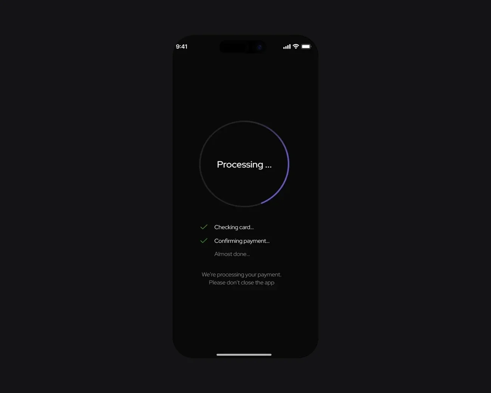
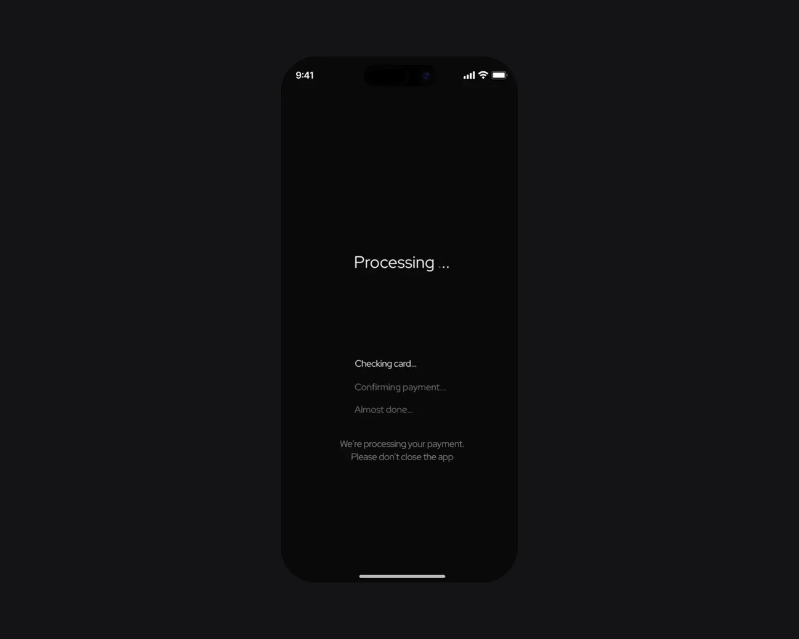
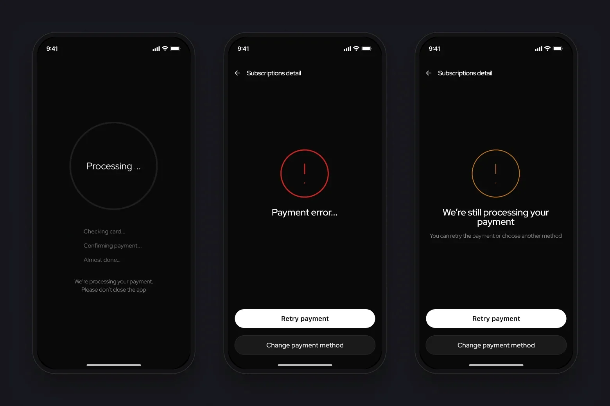
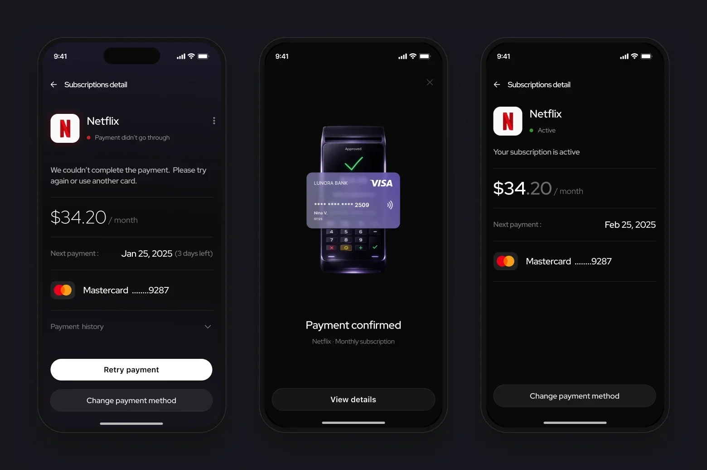
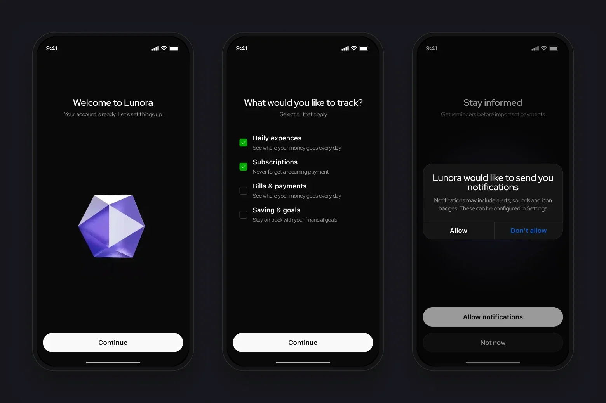

Payment states – processing, error, timeout – most often leave people without an answer about their money.
Lunora is my own project where I went through the full cycle: three in-depth interviews, a survey, a hypothesis, scenarios, states, a UI kit, four usability tests of the prototype and a metrics plan. The focus is on what study projects usually skip: errors, timeouts and retries.
What the research showed
An analysis of banking and subscription managers showed the same: processing is often “empty”, and an error with no next step erodes trust. Hence the hypothesis: explaining the status, the reason and the next action gives people more sense of control.
Have seen a charge for a subscription they forgot about
8 of 9 use two or more cards or accountsWant one app for subscriptions, bills and spending
Four of them – if the interface is simpleCautious about AI: “depends on security”
No one is negative. 6 would trust it more if features could be turned offChose a neutral tone: “Your spending went up by 10%”
4 of 9 name stress as the hardest part of managing moneyThe sample is small and homogeneous: all nine are employed, eight are aged 21–40. It gives a direction for decisions, not a test of the hypothesis.
Payment states
Each state answers three questions: what’s happening now, why it happened and what to do next.
Status, next payment, payment method
An explanation instead of an empty loader, background actions blocked
A short confirmation and a quick close
No blame: Retry payment or Change payment method
Separate from Failed: the status isn’t final yet, don’t pay again
Retry / Change method → back to Processing
Updated status and the next payment date
Processing explains what’s happening
- Why
- In usability tests two of four said the payment took very long to process: they didn’t understand what was happening or whether they could close the screen.
- What I did
- To the steps “Checking card → Confirming payment → Almost done” I added a coloured progress ring and checkmarks on completed steps. The caption says plainly not to close the app; background actions are blocked.
- Result
- You can see which step the payment is on and that you shouldn’t close the screen.
StatusThe new version of the state is in the prototype – a change straight from the tests.


Before testingAfter testingTimeout isn’t Failed
- Why
- During a timeout, people don’t know whether the money was charged and aren’t sure whether to repeat the payment. If the timeout is shown as an error, they may pay twice.
- What I did
- Two different states. Failed – a no-blame message and two actions: Retry or Change payment method. Timeout – a neutral “We’re still processing the payment”.
- Result
- A timeout no longer nudges people to pay twice.
StatusA shared pattern in the UI kit with the same CTA logic.

A next step in every state
- Why
- When a payment fails, people don’t see a clear next step and don’t know when the subscription will be active again.
- What I did
- Subscription details show the status, amount, next payment date and method. After success – a short confirmation and a return to Active with the new date.
- Result
- After any payment outcome, people know whether the subscription is active and when the next payment is due.
StatusIn the prototype with Smart Animate.

Onboarding and wallets without pressure
- Why
- Finance apps often add pressure, and 4 of 9 respondents name stress as the hardest part of managing money.
- What I did
- Onboarding asks what the person wants to track, the notification request explains the benefit, and a wallet can be connected or skipped.
- Result
- People choose what to connect and when, with no mandatory steps.
StatusIn the prototype.

- 01
The survey showed interest in one place for finances, but also caution about AI – so the bet is on transparent statuses, and AI stayed an assistant concept.
- 02
Deliberately out of scope: bank integrations, legal scenarios, monetisation and ML implementation.
- 03
Next – retest the new Processing and measure payment recovery rate and drop-off during retry.